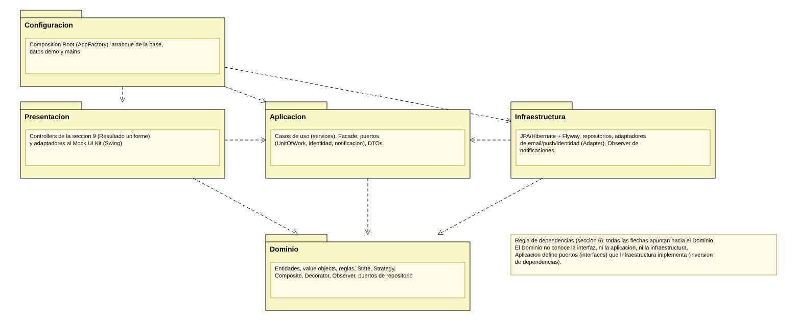
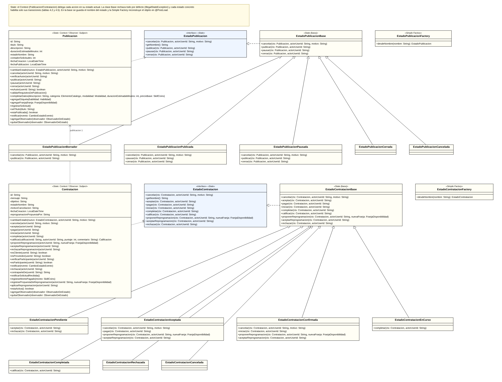
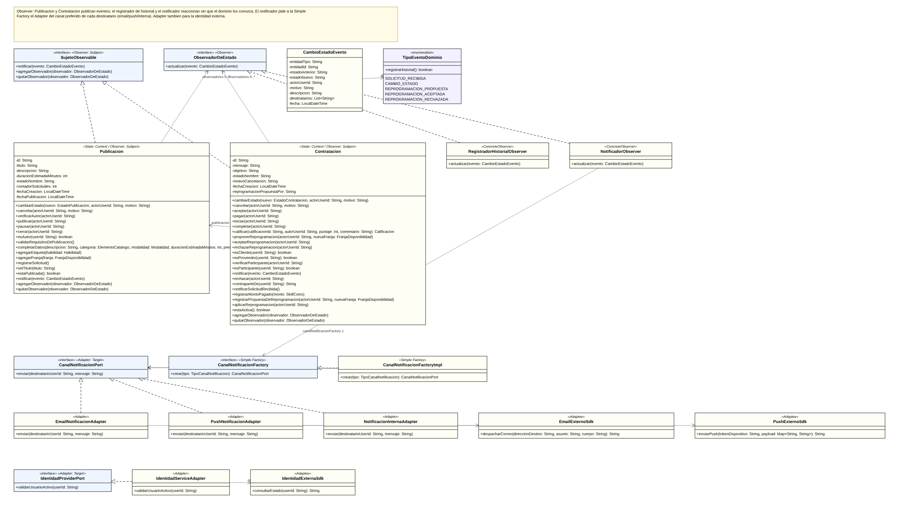
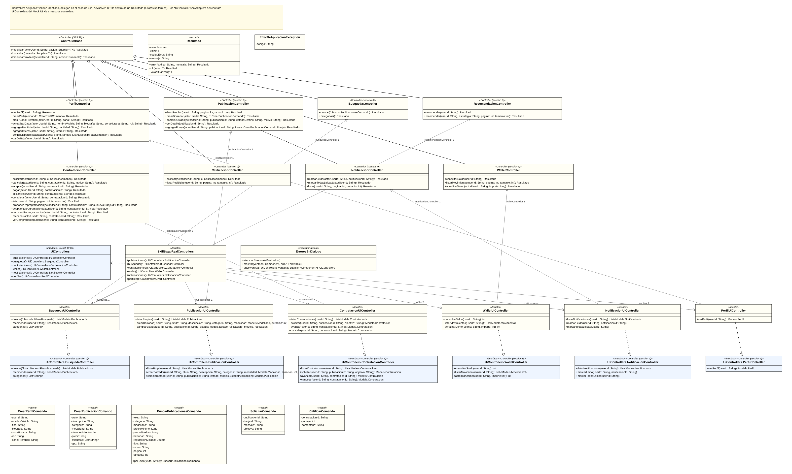

Marketplace de talento, mentorías y proyectos con créditos ficticios (SkillCoins).
Backend en Java 17, Hibernate/JPA, MySQL y Flyway, sin Spring Boot, conectado a la interfaz Swing provista por la cátedra.
Integrantes: ______________________________________________
Fecha de entrega: ________________
Este informe documenta la versión final del sistema y las decisiones de diseño que lo sostienen, con el formato que pide la sección 13 de la consigna: para cada decisión, el problema, la alternativa elegida, sus consecuencias y la evidencia en el código y en las pruebas.
| Indicador | Valor |
|---|---|
| Clases de producción (sin contar la interfaz de la cátedra) | 159 archivos Java en 4 capas + configuración |
| Pruebas automatizadas | 107 tests, todos en verde (unitarios, casos de uso, controllers, persistencia e integración) |
| Cobertura de líneas (JaCoCo) | Dominio 92,3 % · Aplicación 94,0 % · Infraestructura 89,2 % · Presentación 82,7 % · Total 86,7 % |
| Patrones de diseño aplicados | 9: State, Strategy, Observer, Adapter, Simple Factory, Decorator, Composite, Facade y Singleton |
| Modelo UML | docs/SkillSwap - Modelo Final.mdj (StarUML), 9 diagramas |
| Sección | Cómo se cubre |
|---|---|
| 4.1 Perfiles y reputación | Alta validada contra el servicio de identidad (puerto + Adapter), tipo de perfil (profesional/organización), biografía, zona horaria, habilidades, intereses, disponibilidad semanal, canal de notificación. Perfil público por Facade. Reputación recalculada desde calificaciones; no tiene setter. |
| 4.2 Publicaciones | Ofertas (profesional) y desafíos (organización) con título, descripción, categoría, modalidad, duración, cupo (por franja), precio y etiquetas. Cinco estados con State; editable solo en BORRADOR/PAUSADA; cancelar exige motivo; publicar exige título, categoría, precio no negativo y una franja. |
| 4.3 Búsqueda y recomendación | Filtros por texto, categoría, modalidad, rango de precio, habilidad, reputación mínima y tipo; orden por relevancia, reputación, precio y fecha; paginación en la base. Dos estrategias de recomendación intercambiables. |
| 4.4 Solicitud, reserva y contratación | Solicitud con mensaje, franja y objetivo; aceptación que bloquea cupo en una transacción; pago sin saldo negativo ni doble cobro; reprogramación con acuerdo de ambas partes; calificación una vez por parte. |
| 4.5 Estados de una contratación | Siete estados con State; un test recorre cada estado contra cada acción. |
| 4.6 Notificaciones | Observer + Simple Factory + Adapter: solicitud, aceptación, pago, reprogramación, cancelación y sesión completada llegan por el canal elegido por cada usuario (email, push o interna). |
| 5 Reglas de negocio | Las diez reglas están en el dominio o en el caso de uso y tienen tests (ver sección 6). |
| 6 Arquitectura | Clean Architecture: dominio, aplicación, infraestructura, presentación y un Composition Root. |
| 7 Patrones | Nueve patrones, cada uno ligado a una variación concreta y con tests. |
| 8 Persistencia | JPA/Hibernate + MySQL, migraciones Flyway, restricciones, índices, límites transaccionales, sin N+1, datos demo y optimistic locking. |
| 9 Controllers | Los 13 controllers/operaciones de la tabla, más los complementarios; delgados, sin SQL, con errores uniformes y command objects. |
| 10 Mock UI Kit | La interfaz de la cátedra conectada mediante adaptadores; login simulado; errores mostrados en diálogos. |
| 12 Pruebas y calidad | 107 tests, casos negativos pedidos, cobertura mayor al 80 % en dominio y aplicación (verificada por JaCoCo en cada mvn test), README reproducible. |
| 15 Casos de aceptación | Los diez casos tienen al menos un test que los ejercita (tabla de la sección 6). |
La solución respeta la regla de dependencias de Clean Architecture (sección 6): todas las dependencias apuntan hacia el dominio. La capa de aplicación define puertos (interfaces) para todo lo externo —persistencia, transacciones, identidad y canales de notificación— y la infraestructura los implementa. La interfaz de la cátedra solo conoce las interfaces UiControllers; nunca ve repositorios ni entidades JPA.

| Capa | Paquetes | Contiene | No conoce |
|---|---|---|---|
| Dominio | domain.model, .state, .observer, domain.repository | Entidades, value objects (SkillCoins, DisponibilidadSemanal), estados, estrategias, eventos, reglas y puertos de repositorio | Interfaz, casos de uso, SDKs |
| Aplicación | application.usecase, .port, .dto | Casos de uso, Facade, puertos de transacción/identidad/notificación, DTOs | Controllers, JPA, SDKs |
| Infraestructura | infrastructure.* | Repositorios JPA y en memoria, JpaUnitOfWork, JPAUtil, adaptadores de email/push/identidad, observer de notificaciones | Decisiones de negocio |
| Presentación | presentation.controller, presentation.ui | Controllers de la sección 9, Resultado, adaptadores al Mock UI Kit | SQL, reglas internas |
| Configuración | config | AppFactory (Composition Root), arranque de la base, datos demo | — |
La prueba más clara de que la arquitectura cumple su promesa: los mismos casos de uso corren sobre repositorios en memoria y sobre JPA cambiando una sola línea (Repositorios.enMemoria() por Repositorios.jpa()), y la suite los ejercita de las dos formas.
Problema. Publicación (5 estados) y Contratación (7 estados) cambian de comportamiento según su estado, y la consigna exige que el dominio rechace las transiciones inválidas. Con if/switch sobre un String, cada acción nueva toca todos los casos.
Alternativa elegida. State: una interfaz por máquina (EstadoPublicacion, EstadoContratacion), una clase base que rechaza todo por defecto y un estado concreto por cada estado de la tabla, que habilita solo sus transiciones. La entidad (Context) delega. En la base se guarda el nombre del estado y una Simple Factory reconstruye el objeto en @PostLoad.
Consecuencias. Agregar un estado es agregar una clase (Open/Closed). Cada regla de transición está en un solo lugar (alta cohesión). Hay más clases pequeñas.
Evidencia. domain/model/state/*; MatrizDeEstadosTest prueba cada estado contra cada acción.
Problema. Sección 5: "los controllers que modifican información deben validar permisos a partir del userId". En la versión anterior solo se validaba que el usuario existiera: un cliente podía aceptar su propia solicitud.
Alternativa elegida. Dos niveles. El controller valida, mediante el puerto de identidad, que el userId sea un usuario activo. Qué puede hacer cada uno lo decide la entidad que tiene la información (GRASP Information Expert): Publicacion.verificarAutor; Contratacion exige proveedor para aceptar/rechazar/iniciar/completar, cliente para pagar y participante para cancelar, reprogramar y calificar. La violación se expresa con AccesoDenegadoException.
Consecuencias. La regla no se puede saltear desde ninguna entrada (interfaz, consola o test), porque está en la entidad. El botón único "Avanzar estado" del kit obliga a cambiar de usuario para jugar cada rol; para eso se agregó el login simulado.
Evidencia. Contratacion, Publicacion; PermisosTest, ContratacionControllerTest.permisosSeRespetanEnCadaPaso.
Problema. Se piden dos estrategias de recomendación intercambiables, y cambiar de estrategia no debe modificar el caso de uso (sección 15).
Alternativa elegida. RecomendacionStrategy con AfinidadHabilidadesStrategy (habilidades e intereses del perfil contra las etiquetas) y PopularidadRecienteStrategy (cantidad de solicitudes). RecomendacionStrategyFactory resuelve la estrategia por nombre y MotorRecomendacion es el contexto.
Consecuencias. Una estrategia nueva es una clase más y una línea en la fábrica. El caso de uso no tiene condicionales.
Evidencia. PublicacionServiceTest.cambiarLaEstrategiaDeRecomendacionNoRequiereTocarElCasoDeUso, BusquedaControllerTest.recomiendaConDosEstrategiasIntercambiables….
Problema. El reintegro (100 %, 50 % o 0 %) depende de la anticipación, que debe ser configurable.
Alternativa elegida. PoliticaCancelacionStrategy con PoliticaCancelacionEstandar (48 h / 24 h) y PoliticaCancelacionFlexible. La política por defecto se inyecta en AppFactory, y también se puede pasar una distinta por cancelación.
Consecuencias. Cambiar las ventanas es cambiar de estrategia; el caso de uso no se toca. El reintegro genera movimientos en las dos wallets dentro de la misma transacción.
Evidencia. PoliticaCancelacionTest; ContratacionServiceTest.cancelarConDosPoliticasDistintasDaReintegrosDistintos.
Problema. Las promociones pueden combinarse y modificar el precio, pero nunca producir un total negativo.
Alternativa elegida. Cotizable (componente), PrecioPublicacion (componente concreto) y PromocionDecorator con DescuentoPorcentual y DescuentoMontoFijo, encadenables. El value object SkillCoins no admite valores negativos y la resta de promociones se trunca en cero.
Consecuencias. Las combinaciones no generan subclases nuevas. El caso de uso de pago recibe un Cotizable y no sabe cuántas promociones tiene.
Evidencia. DecoratorPrecioTest.
Problema. Las categorías contienen subcategorías y habilidades, y se necesita recorrerlas de forma uniforme.
Alternativa elegida. ElementoCatalogo (componente), Habilidad (hoja) y CategoriaHabilidad (compuesto), persistidos con herencia SINGLE_TABLE y una columna discriminadora, como en el ejemplo de la cátedra.
Consecuencias. Agregar niveles de categorías no cambia el código. La tabla única tiene columnas que algunas filas no usan (se acepta: el árbol es chico).
Evidencia. CompositeCatalogoTest, PublicacionPersistenceTest.
Problema. Cada transición debe quedar en un historial inmutable (fecha, actor y motivo) y los eventos relevantes deben notificarse, sin que las entidades conozcan esas integraciones.
Alternativa elegida. Publicacion y Contratacion son Subjects y publican un CambioEstadoEvento con tipo (solicitud, cambio de estado, reprogramación), descripción y destinatarios. RegistradorHistorialObserver persiste el historial y NotificadorObserver notifica. Los observers se inyectan desde afuera porque el notificador vive en infraestructura.
Consecuencias. Sumar una reacción (por ejemplo, analítica) es sumar un observer. Como el evento ya trae los destinatarios, el notificador no consulta repositorios de publicaciones ni de contrataciones (bajo acoplamiento). Los observers son @Transient y se reconectan al cargar cada entidad.
Evidencia. ContratacionControllerTest.laSolicitudLeLlegaAlProveedorYSeRegistraEnElHistorial, ReprogramacionTest.
Problema. Email, push y la identidad externa son proveedores reemplazables, con APIs que no coinciden con lo que la aplicación necesita.
Alternativa elegida. Puertos en aplicación (CanalNotificacionPort, IdentidadProviderPort) y adaptadores en infraestructura que traducen a los SDK simulados (EmailExternoSdk: dirección + asunto + cuerpo; PushExternoSdk: token + payload; IdentidadExternaSdk: códigos de estado). CanalNotificacionFactoryImpl elige el adaptador según el canal preferido de cada usuario.
Consecuencias. Cambiar de proveedor es escribir otro adaptador. Un mismo evento puede salir por dos canales distintos, uno por cada parte.
Evidencia. AdaptadoresTest; ContratacionControllerTest.unMismoEventoSalePorDosCanales… (caso de aceptación de la sección 15).
Problema. El perfil público (4.1) combina datos de cuatro repositorios: perfil, publicaciones activas, contrataciones (historial) y calificaciones.
Alternativa elegida. PerfilPublicoFacade.verPerfilPublico(id) coordina esas consultas y devuelve un único PerfilPublicoDTO.
Consecuencias. El controller y la interfaz no conocen ninguno de los cuatro repositorios. Si cambia el armado del resumen, cambia solo la fachada.
Evidencia. PerfilControllerTest.elPerfilPublicoMuestraReputacionPublicacionesActivasEHistorial.
Problema. Aceptar, pagar, cancelar y reprogramar tocan varias filas (estado, cupo, dos wallets, movimientos), que deben guardarse juntas. Además, dos aceptaciones simultáneas no deben consumir el mismo último cupo.
Alternativa elegida. Puerto UnitOfWork; JpaUnitOfWork abre la transacción y la comparte por hilo (JpaContext), así que los repositorios participan sin saberlo. FranjaDisponibilidad tiene @Version: si dos transacciones leen la misma versión, la segunda falla al confirmar y se traduce a ConflictoConcurrenteException (código CONFLICTO_CONCURRENTE). En el pago, el saldo se valida y la transición se pide antes de mover dinero, así un pago rechazado o duplicado no toca ningún saldo.
Consecuencias. El caso de uso expresa su límite transaccional sin depender de JPA. Ante un conflicto, el usuario reintenta.
Evidencia. OptimisticLockingTest, RecorridoJpaIntegrationTest.dosTransaccionesSobreElUltimoCupo…, ContratacionControllerTest.doblePagoNoCobraDosVeces y saldoInsuficienteNoModificaSaldosNiEstado.
Problema. La búsqueda filtraba en memoria con pocos filtros y no paginaba.
Alternativa elegida. Un query object CriteriosBusqueda (siete filtros, orden y página) que entiende cualquier implementación del puerto. En JPA se resuelve en tres consultas: ids con filtros, ORDER BY y LIMIT/OFFSET; un COUNT; y la carga de esas publicaciones con JOIN FETCH de autor, categoría y franjas. Las demás colecciones se cargan por lotes (hibernate.default_batch_fetch_size). La relevancia suma 3 puntos por título, 2 por etiqueta y 1 por descripción, y desempata por popularidad y reputación.
Consecuencias. Paginar ids evita paginar en memoria cuando hay JOIN FETCH de colecciones. La consulta dinámica es más larga que un filtro en Java, pero escala. Las reglas están documentadas en ReglasDeBusqueda, que usa la versión en memoria.
Evidencia. BusquedaControllerTest (filtros, órdenes, paginación); RecorridoJpaIntegrationTest.laBusquedaFiltraOrdenaYPaginaEnLaBaseSinNMasUno verifica que traer 6 resultados cuesta las mismas consultas que traer 2.
Problema. Sección 4.4: la reserva puede reprogramarse antes de comenzar si ambas partes aceptan. Antes, una sola parte la aplicaba directamente.
Alternativa elegida. Una parte propone una franja de la misma publicación con cupo (se guarda la franja propuesta y quién la propuso). La otra parte la acepta, y entonces se mueve el cupo de una franja a la otra en una transacción, o la rechaza. Solo ACEPTADA y CONFIRMADA lo admiten (State). Se verifica que la nueva franja no choque con la agenda del cliente. Cada paso se notifica.
Consecuencias. Una propuesta pendiente no reserva cupo; si al aceptarla ya no hay lugar, falla con un mensaje claro. Cancelar descarta la propuesta.
Evidencia. ReprogramacionTest, ContratacionControllerTest.reprogramacionDeComunAcuerdo, RecorridoJpaIntegrationTest.
Problema. La sección 9 pide controllers delgados con manejo uniforme de errores, y la interfaz de la cátedra impone su propio contrato (UiControllers), más chico y con un único "avanzar".
Alternativa elegida. Controllers propios (Perfil, Publicación, Búsqueda, Recomendación, Contratación, Calificación, Notificación, Wallet) que heredan de ControllerBase: validan la identidad, delegan en el caso de uso, devuelven DTOs y traducen cada excepción a un Resultado con código estable. Los *UiController son Adapters del contrato del kit hacia estos controllers. Un proxy (ErroresEnDialogo) muestra los errores en un diálogo sin modificar las pantallas. Los listados se devuelven paginados (Pagina<T>).
Consecuencias. Las mismas operaciones sirven a la interfaz, a la demo por consola y a los tests. Del kit solo se cambiaron dos cosas: el usuario activo pasó de constante a parámetro (login simulado) y se corrigió un error de layout en la fila de contrataciones.
Evidencia. ManejoDeErroresTest, UiAdaptadoresTest, capturas en docs/capturas.
Problema. Clean Architecture pide un dominio independiente de JPA. Mantener clases espejo (entidad de dominio + entidad JPA + mapeo) duplica cada clase.
Alternativa elegida. Las anotaciones viven en domain.model (el mismo compromiso que el ejemplo Magic Café de las clases 9 a 13). El dominio no usa EntityManager ni consultas: solo metadatos. JPAUtil es el único punto que crea la EntityManagerFactory (Singleton): crearla es costoso y debe existir una sola por unidad de persistencia.
Consecuencias. Hay menos código y un único modelo. El costo es que el dominio depende de jakarta.persistence en compilación. Del Singleton: estado global (los tests lo cierran y reinician explícitamente) y una única base por proceso.
Evidencia. persistence.xml con hbm2ddl.auto=validate: Hibernate valida el mapeo contra el esquema de Flyway en cada test de persistencia.
Problema. La baja de un perfil no debe borrar operaciones históricas. Además, una franja ocupada no debe poder reservarse.
Alternativa elegida. Perfil.darBajaLogica() marca el perfil inactivo y el caso de uso pausa sus publicaciones; un perfil inactivo no publica ni solicita. Para la agenda, el cupo de cada franja se controla en la propia franja y VerificadorDeAgenda (Pure Fabrication) impide que un cliente tenga dos sesiones activas que se superpongan o que pida dos veces la misma franja.
Consecuencias. El historial queda íntegro. La regla de agenda involucra varias contrataciones, por eso no la tiene ninguna en particular.
Evidencia. PerfilControllerTest.laBajaLogicaPausaSusPublicaciones…, ContratacionControllerTest.elClienteNoPuedeTenerDosSesionesQueSePisan.
| Principio | Dónde se ve |
|---|---|
| S — Responsabilidad única | Casos de uso que solo orquestan; reglas en las entidades; DtoMapper solo traduce; ControllerBase solo maneja identidad y errores. |
| O — Abierto/cerrado | Nuevo estado, estrategia, promoción, canal u observer = clase nueva, sin tocar las existentes. |
| L — Sustitución de Liskov | Los repositorios en memoria y JPA son intercambiables (la suite corre con ambos); todos los estados respetan el contrato y rechazan con la misma excepción. |
| I — Segregación de interfaces | Un puerto por responsabilidad (UnitOfWork, IdentidadProviderPort, CanalNotificacionPort, un repositorio por agregado). |
| D — Inversión de dependencias | La aplicación depende de puertos; la infraestructura los implementa; AppFactory inyecta todo por constructor. |
| Information Expert | Contratacion valida permisos, cupo y contraparte; Publicacion, sus requisitos para publicar; Perfil, su reputación. |
| Creator | Contratacion.calificar(...) crea la Calificacion; Publicacion agrega sus franjas. |
| Controller | Un controller por entidad o caso de uso (sección 9), delgado. |
| Bajo acoplamiento / Alta cohesión | Observer con destinatarios en el evento; Facade del perfil; estados pequeños y cohesivos. |
| Polimorfismo | State, Strategy, Decorator y Composite reemplazan condicionales. |
| Pure Fabrication | Repositorios, VerificadorDeAgenda, ReglasDeBusqueda, UnitOfWork. |
| Indirection / Protected Variations | Puertos y adaptadores ante proveedores externos; Publicador aísla a la publicación del tipo concreto de autor. |
V1 (esquema), V2 (datos demo con ids fijos) y V3 (tipo de perfil y de publicación, intereses, disponibilidad, fechas, reprogramación, datos de la notificación, restricciones e índices). Hibernate nunca genera DDL: valida.JOIN FETCH en los listados masivos; carga por lotes para el resto; colecciones EAGER donde el dominio las usa fuera de la sesión (justificado en el código).| Nivel | Suites | Qué prueban |
|---|---|---|
| Dominio | MatrizDeEstados, PublicacionState, ContratacionState, Permisos, Reprogramacion, Perfil, DecoratorPrecio, PoliticaCancelacion, CompositeCatalogo | Reglas, transiciones válidas e inválidas, permisos y estrategias |
| Casos de uso (puertos simulados) | PublicacionService, ContratacionService | Flujo completo, cupo, saldo insuficiente, políticas |
| Controllers + casos de uso | BusquedaController, ContratacionController, PerfilController, ManejoDeErrores, UiAdaptadores | Filtros, orden y paginación; casos negativos; códigos de error; contrato del Mock UI Kit |
| Adaptadores | Adaptadores | Traducción a cada SDK; fábrica de canales; identidad |
| Persistencia e integración (H2 modo MySQL + Flyway) | PublicacionPersistence, OptimisticLocking, ContratacionServiceJpaIntegration, RecorridoJpaIntegration | Mapeo, estado reconstruido, transacciones, concurrencia, búsqueda en la base sin N+1, recorrido completo |
| Caso | Test |
|---|---|
| Publicar una mentoría válida y encontrarla con búsqueda filtrada | BusquedaControllerTest (filtros), RecorridoJpaIntegrationTest |
| Rechazar la publicación de una oferta incompleta | PublicacionServiceTest.rechazaPublicarUnaOfertaIncompleta, PerfilControllerTest.publicarUnaOfertaIncompletaSeRechaza |
| Solicitar, aceptar y pagar con saldo suficiente | ContratacionControllerTest.recorridoCompleto… |
| Evitar que dos aceptaciones consuman el último cupo | ContratacionControllerTest.cupoAgotado…, OptimisticLockingTest, RecorridoJpaIntegrationTest.dosTransacciones… |
| Rechazar un pago con saldo insuficiente sin modificar saldos ni estado | ContratacionControllerTest.saldoInsuficiente…, ContratacionServiceJpaIntegrationTest |
| Cancelar y calcular el reintegro con dos políticas | ContratacionServiceTest.cancelarConDosPoliticasDistintas… |
| Cambiar la estrategia de recomendación sin modificar el caso de uso | PublicacionServiceTest, BusquedaControllerTest.recomienda… |
| Dos tipos de notificación ante un mismo evento | ContratacionControllerTest.unMismoEventoSalePorDosCanales… |
| Promociones acumulables sin precio negativo | DecoratorPrecioTest |
| Completar, calificar una sola vez y recalcular reputación | ContratacionControllerTest.calificacionNoAutorizada, PerfilControllerTest |
Cobertura de líneas: dominio 92,3 %, aplicación 94,0 %, total 86,7 %. mvn test falla si algún paquete de dominio o aplicación baja del 80 %.
Modelo completo en docs/SkillSwap - Modelo Final.mdj (abrir con StarUML). Las imágenes de cada diagrama están en docs/diagramas.


